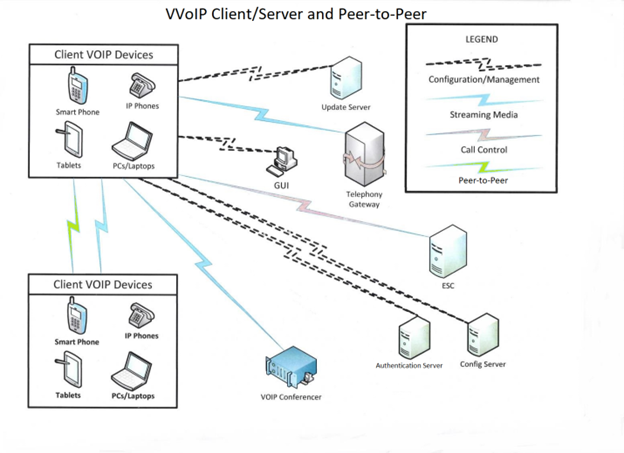

The scope of this PP-Module is to describe the security functionality of a Voice/Video over IP (VVoIP)
endpoint in terms of [CC] and to define functional and assurance requirements for such products. This PPModule is intended for use with the following Base-PPs:
Protection Profile for Application Software, Version 1.3 (App PP)
collaborative Protection Profile for Network Devices, Version 2.2e (NDcPP)
These Base-PPs are both valid because a VVoIP endpoint is a specific type of network device or software
application that carries sensitive data over remote channels and uses protocols to do so that a typical
network device or software application does not implement. Therefore, additional security requirements
are necessary to ensure that sensitive communications are not subject to unauthorized disclosure to
unintended recipients.
Note that the NDcPP defines an optional architecture for a “distributed TOE” that allows for security
functionality to be spread across multiple distinct components. However, a TOE that conforms to the
NDcPP and this PP-Module will not be a distributed TOE. All security functionality will be contained within
a single physical device.
1.2 Terms
The following sections list Common Criteria and technology terms used in this document.
1.2.1 Common Criteria Terms
Assurance
Grounds for confidence that a TOE meets the SFRs [CC].
Base Protection Profile (Base-PP)
Protection Profile used as a basis to build a PP-Configuration.
Collaborative Protection Profile (cPP)
A Protection Profile developed by
international technical communities and approved by multiple schemes.
Common Criteria (CC)
Common Criteria for Information Technology Security Evaluation (International Standard ISO/IEC 15408).
Common Criteria Testing Laboratory
Within the context of the Common Criteria Evaluation and Validation Scheme (CCEVS), an IT security evaluation facility
accredited by the National Voluntary Laboratory Accreditation Program (NVLAP) and approved by the NIAP Validation Body to conduct Common Criteria-based evaluations.
Common Evaluation Methodology (CEM)
Common Evaluation Methodology for Information Technology Security Evaluation.
Distributed TOE
A TOE composed of multiple components operating as a logical whole.
Functional Package (FP)
A document that collects SFRs for a particular protocol, technology,
or functionality.
Operational Environment (OE)
Hardware and software that are outside the TOE boundary that support the TOE functionality and security policy.
Protection Profile (PP)
An implementation-independent set of security requirements for a category of products.
A protocol that is used to provide multimedia (voice/video) streaming services with
added security of encryption, message authentication and integrity, and replay
protection.
Sensitive Data
Call control/signal data, media data, and audit/management data that must be
protected while in transit to prevent unauthorized disclosure.
Session Initiation Protocol (SIP)
A communications protocol defined by IETF that is used for creating, modifying, and
terminating multimedia sessions with multiple participants.
Software/firmware update delivery channel
A trusted channel between a client and file server (which may be the same server as
the call control server) for secure file download of software/firmware updates.
State
A configuration of a VVoIP endpoint based on how the user is currently using or not
using the endpoint. Examples include:
Hook state: whether the endpoint is active (off-hook) or inactive (on-hook)
Mute state: the endpoint is active but is deliberately not transmitting data
Hold state: the endpoint is active but is deliberately not transmitting or
receiving data
Streaming media
The voice/video exchanged between VVoIP endpoints.
VVoIP Call Control Server
A VVoIP infrastructure device that performs call control functions between a client and
other VVoIP endpoints; this may be either a dedicated device such as an ESC or a VVoIP
device itself when using P2P.
1.3 Compliant Targets of Evaluation
This PP-Module specifically addresses a dedicated network device or software application that facilitates
the exchange of voice or video communication across an Internet Protocol (IP) network. The endpoint is
a client (TOE) that communicates with a VVoIP call control server and may serve as its own call control
server when using P2P. The VVoIP endpoint shall be able to secure file download from a file server to
update VVoIP endpoint software and configuration, to establish secure communication for call control
with the call control server, and to secure streaming media to other devices.
The combination of the NDcPP and this PP-Module is a network device that provides VVoIP endpoint
functionality in addition to all of the security functionality expected of a network device as mandated by
the NDcPP. The combination of the App PP and this PP-Module is a software application running on a
general-purpose operating system that includes VVoIP endpoint capabilities in addition to all of the
security functionality expected of a software application as mandated by the App PP.
This PP-Module describes the functional requirements and threats specific to the VVoIP endpoint. The
most notable additions are requirements for the call control protocol (SIP, H.323) and streaming media
protocol (SRTP, RTP). A conformant TOE is expected to be a standalone device or application; distributed
TOE’s are not permitted.
1.4 TOE Boundary
The TOE boundary includes the VVoIP-capable device or application (VVoIP endpoint). A VVoIP-capable
device is a dedicated phone whereas a VVoIP endpoint application is just one of many applications that
runs on a general-purpose device such as a smartphone, tablet, or PC. Regardless of whether the TOE is a
hardware appliance or a client application on an operating system, it will be deployed in the same
environment. The figure below shows a typical VVoIP infrastructure from the perspective of the TOE. Many of the environmental components have direct connections between one another, but since these
are not visible to the TOE, these connections have not been depicted.
 Figure 1:
Typical VVoIP Deployment
The TOE uses a VVoIP call control server, either by connecting to an ESC or acting as one itself when using
P2P, in order to set up connections with other VVoIP endpoint devices or other telephony equipment such
as a conference bridge. The call control server also may have the ability to deliver software/firmware
updates to the TOE, but this can alternatively be performed by a file server. The TOE must be able to
process Internet Protocol version 4 (IPv4) and/or IPv6 packets.
To be able to initiate communications in a client-server architecture, the TOE needs at minimum an IP
address, network mask, gateway address, configuration server address, update server address (or may
rely on platform for updates if it is a software application configured to do so), and call control server
address. The address may be obtained by Dynamic Host Configuration Protocol (DHCP), manually entered
on the VVoIP endpoint, or inherited from the device the TOE resides on (if it is a software application);
addresses can belong to the same device if it performs multiple functions (such as an ESC which also
performs updates). The TOE should allow basic telephony functions. Once the IP addresses are obtained,
the TOE downloads any VVoIP application updates, downloads VVoIP endpoint configuration, and
connects to the call control server as a VVoIP client. When a call is finished or the line is otherwise not in
use, the TOE will ensure that streaming media communication paths/ports are closed while call control
remains open.
The TOE has three paths for three different functions that need to execute: streaming media path that
contains voice, video, and session control (endpoint to endpoint); call control path to control the endpoint
(endpoint to VVoIP call control server), and configuration/management path to configure and manage the
TOE (software/firmware updates, configuration updates, audit).
1.5 Use Cases
This PP-Module defines four potential use cases for the VVoIP TOE, defined below. The first two use cases
define the physical embodiment of the TOE, while the latter two define its role in a telecommunications
deployment.
Regardless of the physical embodiment of the TOE, the expected functional capabilities are similar. However, when the TOE is deployed in a peer-to-peer architecture, it must perform auditing and call
control functions that a client-server TOE does not need to perform because the Enterprise Session
Controller provides those functions in that architecture. A client-server TOE may also perform its own
auditing, but it is not required.
[USE CASE 1] Dedicated Appliance
The VVoIP endpoint is sold and packaged as a standalone network appliance that does not have
a direct interface to the underlying platform operating system. In this use case, conformance to
the NDcPP and this PP-Module is sufficient to ensure security. Note that the NDcPP defines
optional functionality for “distributed TOEs” – for a TOE to conform to this PP-Module, it must be
a single device and not a distributed TOE.
[USE CASE 2] Software Application
The VVoIP endpoint is sold and packaged as an application that is installed on a general-purpose
computer or mobile device running a modifiable operating system (such as Windows or Linux). This computer may run end user applications above and beyond those used for VVoIP
communications since it functions as a user workstation. In this case, the VVoIP endpoint
application is expected to conform to both this PP-Module and the App PP.
[USE CASE 3] Client-Server Architecture
The VVoIP endpoint, whether hardware or software, is deployed in an environment where it
interacts with an Enterprise Session Controller to facilitate call control functions.
[USE CASE 4] Peer-to-Peer Architecture
The VVoIP endpoint, whether hardware or software, is deployed in an environment where it
interacts directly with other VVoIP endpoints without the use of an Enterprise Session Controller
as an intermediary.
2 Conformance Claims
Conformance Statement
An ST must claim exact conformance
to this PP-Module.
The evaluation methods used for evaluating the TOE are a combination of the workunits
defined in [CEM] as well as the Evaluation Activities for ensuring that individual SFRs
and SARs have a sufficient level of supporting evidence in the Security Target and guidance
documentation and have been sufficiently tested by the laboratory as part of completing
ATE_IND.1. Any functional packages this PP claims similarly contain their own Evaluation
Activities that are used in this same manner.
CC Conformance Claims
This PP-Module is conformant to
Part 2 (extended)
and Part 3 (extended)
of Common Criteria CC:2022, Revision 1.
PP Claim
This PP-Module does not claim conformance to
any Protection Profile.
This PP-Module is
Functional Package for TLS, version 1.1 conformant.
This PP-Module does not conform to any
assurance packages.
The functional packages to which the PP conforms may include SFRs that are not mandatory
to claim for the sake of conformance. An ST that claims one or more of these functional
packages may include any non-mandatory SFRs that are appropriate to claim based on the
capabilities of the TSF and on any triggers for their inclusion based inherently on the SFR
selections made.
3 Security Problem Definition
The security problem is described in terms of the threats that the TOE is expected to address, assumptions
about its operational environment, and any organizational security policies that the TOE is expected to
enforce.
3.1 Threats
The following threats defined in this PP-Module extend the threats defined by the Base-PP.
T.MEDIA_DISCLOSURE
An attacker can use the encrypted variable rate vocoder frames to their advantage to decode
transmitted data.
T.UNDETECTED_TRANSMISSION
An attacker may cause the TOE to exfiltrate audio or video media over a remote channel while in a
state where the user has a reasonable expectation that no media is being transmitted.
3.2 Assumptions
These assumptions are made on the Operational Environment (OE) in order to be able to ensure that the
security functionality specified in the PP-Module can be provided by the TOE. If the TOE is placed in an OE that does not meet these assumptions, the TOE may no longer be able to
provide all of its security functionality.
The following assumptions that are defined in this PP-Module extend the assumptions that are defined
by the Base-PPs.
A.UPDATE_SOURCE
It is assumed that TOE software/firmware updates will be made available on either the call control
server that the TOE connects to or a separate file server managed by the organization.
Note that because this PP-Module specifically disallows distributed TOEs, a conformant TOE will not claim
OE.COMPONENTS_RUNNING when NDcPP is the Base-PP.
3.3 Organizational Security Policies
An organization deploying the TOE is
expected to satisfy the organizational security policy listed below in addition to all
organizational security policies defined by the claimed Base-PP.
This document does not define any additional OSPs.
4 Security Objectives
4.1 Security Objectives for the Operational Environment
The following environmental security objectives that are defined in this PP-Module extend the objectives
that are defined by the Base-PPs.
OE.UPDATE_SOURCE
TOE administrators will ensure that the TOE is installed in a manner that will allow the TOE to effectively
enforce its policies on network traffic of monitored networks.
4.2 Security Objectives Rationale
This section describes how the assumptions and organizational
security policies map to operational environment security objectives.
The objective satisfies the assumption
by ensuring that TOE updates are
made available in the intended location.
5 Security Requirements
This chapter describes the security requirements which have to be fulfilled by the product under evaluation. Those requirements comprise functional components from Part 2 and assurance components from Part 3 of
[CC].
The following conventions are used for the completion of operations:
Refinement operation (denoted by bold text or strikethrough
text): Is used to add details to a requirement or to remove part of the requirement that is made irrelevant
through the completion of another operation, and thus further restricts a requirement.
Selection (denoted by italicized text): Is used to select one or more options
provided by the [CC] in stating a requirement.
Assignment operation (denoted by italicized text): Is used to assign a
specific value to an unspecified parameter, such as the length of a password. Showing the
value in square brackets indicates assignment.
Iteration operation: Is indicated by appending the SFR name with a slash and unique identifier
suggesting the purpose of the operation, e.g. "/EXAMPLE1."
5.1 Collaborative
Protection Profile for Network Devices
Security Functional Requirements Direction
In a PP-Configuration that includes the NDcPP, the VVoIP client is expected to rely on some of the security
functions implemented by the network device as a whole and evaluated against the NDcPP. In this case,
the following sections describe any modifications that the ST author must make to the SFRs defined in the
NDcPP in addition to what is mandated by section 5.3.
5.1.1 Modified SFRs
The SFRs listed in this section are defined in the NDcPP and relevant to the secure operation of the TOE.
5.1.1.1 Security Audit (FAU)
FAU_STG_EXT.1: Protected Audit Event Storage
This SFR is modified to prohibit the selection of distributed TOE options. Any element not mentioned in this
section is unchanged from its definition in the Base-PP.
The text of FAU_STG_EXT.1.2 is replaced with:
FAU_STG_EXT.1.2: The TSF shall be able to store generated audit data on the TOE itself.
[The TOE shall consist of a single standalone component that stores audit
data locally].
Application Note: This PP-Module modifies the existing FAU_STG_EXT.1 SFR in the NDcPP to prohibit
the selection of any “distributed TOE” behavior in FAU_STG_EXT.1.2. The SFR is
otherwise unchanged.
5.1.1.2 Crytographic Support (FCS)
FCS_NTP_EXT.1: NTP Protocol
This SFR is selection-based in the NDcPP and remains selection-based in this PP-Module. However, an
additional trigger for this SFR’s inclusion is added for the selection of “register the TOE to an ESC…” in
FMT_SMF.1/VVoIP. This is because any VVoIP TOE that can be registered to ESCs is required to use them
as NTP servers.
If the TOE is not registered to an ESC, it is not relevant to this PP-Module whether or not NTP is
implemented, and in this case this SFR remains selection-based on FPT_STM_EXT.1.2, which is not
modified by this PP-Module (i.e. a peer-to-peer TOE does not register to an ESC but may still receive time
data from a separate NTP source).
FCS_TLSC_EXT.1: TLS Client Protocol without Mutual Authentication
This SFR is selection-based in the Functional Package for TLS, version 2.0 but is mandated by this PP-Module because TLS is used to secure
call control and streaming media channels regardless of the application protocol used. There is no change
to the SFR text itself.
FCS_TLSC_EXT.2: TLS Client Support for Mutual Authentication
This SFR is optional in the Functional Package for TLS, version 2.0
but is mandated by this PP-Module because the TLS implementation that
is used to secure call control and streaming media channels must be secured using mutual authentication. There is no change to the SFR text itself.
This SFR is selection-based in the NDcPP but is mandated by this PP-Module because it is a dependency
on the TLS functionality that this PP-Module requires. There is no change to the SFR text itself.
5.1.1.4 Protection of the TSF (FPT)
FPT_TUD_EXT.1: Trusted Update
This PP-Module does not modify this SFR as it is defined in the NDcPP. However, note that this PP-Module
expects that either the call control server or a separate file server managed by the organization to function
as the source of TOE software/firmware updates. The evaluator shall ensure that the test environment is
configured appropriately.
5.1.1.5 Trusted Path (FTP)
FTP_ITC.1: Inter-TSF Trusted Channel
This SFR is modified to mandate the inclusion of TLS. Any other protocols may additionally be claimed.
Any element that is not included in this section is unchanged from its definition in the Base-PP.
The text of the requirement is replaced with:
FTP_ITC.1.1: The TSF shall be capable of using TLS and [selection: IPsec, SSH, DTLS, HTTPS, no other protocols]
to provide a trusted communication channel between itself and authorized IT entities supporting the following capabilities: audit server,
streaming media channel, call control channel, software/firmware update delivery channel, [selection: authentication server,
[assignment: other capabilities], no other capabilities] that is logically distinct from other communication channels and provides assured identification
of its end points and protection of the channel data from disclosure and detection of modification of the channel data.
Application Note: The NDcPP provides the ability for the ST author to specify the protocols used to
establish trusted communications in FTP_ITC.1.1. This PP-Module mandates the inclusion of TLS because it is the underlying protocol used to secure
communications with the ESC and other VVoIP endpoints. Additional protocols
should be selected if they are used for securing other trusted channels. For
example, the TSF may communicate with an ESC using TLS for call control
functions but some other protocol for remote transmission of audit data. This PP-Module also specifies
additional uses for the trusted channel beyond what the NDcPP defines.
The remainder of the SFR is unchanged from its definition in the Base-PP.
5.2
Protection Profile for Application Software
Security Functional Requirements Direction
In a PP-Configuration that includes the App PP, the VVoIP client is expected to rely on some of the security
functions implemented by the software application as a whole and evaluated against the App PP. In this
case, the following sections describe any modifications that the ST author must make to the SFRs defined
in the App PP in addition to what is mandated by section 5.3.
5.2.1 Modified SFRs
The SFRs listed in this section are defined in the APP PP and relevant to the secure operation of the TOE.
5.2.1.1 Protection of the TSF (FPT)
FPT_TUD_EXT.1: Trusted Update
This PP-Module does not modify this SFR as it is defined in the App PP. However, note that this PP-Module
expects that either the call control server or a separate file server managed by the organization to function
as the source of TOE software/firmware updates. The evaluator shall ensure that the test environment is
configured appropriately.
5.2.1.2 Trusted Path/Channel (FTP)
FTP_DIT_EXT.1: Protection of Data in Transit
This SFR is modified from its definition in the Base-PP to mandate the inclusion of TLS as a method to protect data
and to add support for the use of SRTP to protect data in transit.
The text of the requirement is replaced with:
FTP_DIT_EXT.1.1:
The application shall [selection:
Application Note:
The App PP provides the ability for the ST author to specify the protocols used to
establish trusted communications and the behavior that trusted communications
are used to protect. This PP-Module mandates the inclusion of TLS because it is
the underlying protocol used to secure communications with a VVoIP call control
server and other VVoIP endpoints. Additional protocols may be selected if they are
used for securing other channels. For example, the TSF may communicate with an ESC using TLS for call control functions but some other protocol for remote
transmission of audit data.
Since the App PP does not define separate SFRs for trusted channel (TOE to trusted
third party) and trusted path (administrator to TOE), FTP_DIT_EXT.1 is expected
to cover both use cases. The proper protocols should be selected accordingly.
Sensitive data includes at minimum call control/signal data, media data, and
audit/management data.
If “SRTP” is selected in FTP_DIT_EXT.1.1, the selection-based SFRs
FCS_COP.1/SRTP and FCS_SRTP_EXT.1 must be claimed.
The following section describes the SFRs that must be satisfied by any TOE that claims conformance to this PP-Module. These SFRs must be claimed regardless of which PP-Configuration is used to define the TOE.
5.3.1 Auditable Events for Mandatory SFRs
Table 2: Auditable Events for Mandatory Requirements
The TSF shall transmit voice media using a constant bit rate voice vocoder.
Application
Note:
A constant bit rate vocoder provides a constant output length that does not have
the vulnerabilities that a variable bit rate vocoder contains when encrypted.
The TSF shall enforce the [media transmission policy] based on the following
types of subject and information security attributes: [TOE hook state, VVoIP call
connection status, and VVoIP call control server status].
The TSF shall permit an information flow between a controlled subject and
controlled information via a controlled operation if the following rules hold: [
The TOE is [selection: registered with a VVoIP call control server, acting as a VVoIP call control server when using P2P],
A call has been established with a telephony device (VVoIP endpoint),
The TSF shall explicitly deny an information flow based on the following rules:
[all TCP and UDP ports used by the TOE are closed when not in active use].
5.3.4 Security Management (FMT)
FMT_SMF.1/VVoIP Specification of Management Functions (VVoIP Communications)
Application
Note:
This SFR defines additional management functions for the TOE beyond what is
defined in each of the supported Base-PPs as FMT_SMF.1. The TOE may have all
management functionality implemented in the same logical interface; it is not
necessary for the Base-PP management functions and the PP-Module’s
management functions to be implemented separately.
The audit-related sections are duplicates of those in the NDcPP’s definition of
FMT_SMF.1. If the VVoIP audit functionality is configurable separately from the
auditing for the device as a whole, the relevant selections should be made or
omitted in each iteration as needed.
If the TOE claims conformance to the NDcPP and “register the TOE to an ESC…” is
selected, the selection-based SFR FCS_NTP_EXT.1 must be claimed since
connectivity to an ESC implies that the TSF will use it as an NTP server.
The TSF shall support the definition of [selection: baselines (‘expected and approved’), anomaly (‘unexpected’) traffic patterns] including the specification of [selection:
throughput ([assignment:
data elements (e.g. bytes, packets, etc.) per time period (e.g. minutes, hours, days)])
time of day;
frequency;
thresholds;
[[assignment:
other methods]]
]
and the following network protocol fields:
[selection: all packet header and data elements defined in IPS_SBD_EXT.1, [assignment:
subset list of packet header and data elements from IPS_SBD_EXT.1]].
Application
Note:
Baselines are the definition of known-good traffic (to be allowed per
IPS_ABD_EXT.1.3) whilst anomaly traffic is definition of (‘offending’) traffic that is
to be handled per other actions defined in IPS_ABD_EXT.1.3. Frequency can be
defined as a number of occurrences of an event (such as detection of packets
matching a signature) over a defined period of time, such as the number of new
FTP sessions established during one hour. Thresholds can be defined as an amount
or percentage of deviation from expected levels or limits, such as a number of
megabytes of data transferred via FTP per hour.
The TSF shall support the definition of anomaly activity through [selection: manual configuration by administrators, automated configuration].
Application
Note:
The “baseline” and “anomaly” can be something manually defined/configured
by a TOE administrator (or importing definitions), or something that the TOE is
able to automatically define/create by inspecting network traffic over a period
of time (a.k.a. “profiling”). It is not essential for the IPS TOE to have a capability
of “profiling” a network to dynamically defining a baseline or rule; if the product
has this functionality, it is outside the scope of this PP-Module.
The TSF shall support configuration and implementation of known-good and known-bad lists of [selection: source, destination] IP addresses and [selection: no additional address types,
[assignment:
list of address types]].
Application
Note:
The address types defined in this SFR are limited to IP addresses (e.g., a single IP
address or a range of IP addresses) because this PP-Module is limited to
inspection of IP traffic. IPS TOEs are not prohibited from enabling functionality
that would allow/prohibit traffic flow based on other address types, such as
MAC addresses.
The TSF shall allow [Security Administrators] to configure the following IPS policy elements: [selection: known-good list rules, known-bad list rules, IP addresses, [assignment:
other IPS policy elements], no other IPS policy elements].
The TSF shall perform analysis of IP-based network traffic forwarded to the
TOE’s sensor interfaces, and detect violations of administratively-defined IPS
policies.
Application
Note:
Though it might be the case in some TOEs that any TOE interface can be a sensor
interface, that capability is not a requirement. This SFR uses the term “sensor
interface” to refer to any TOE interface to which one or more IPS policy has been
applied. An administratively-defined IPS policy is any set of rules for traffic
analysis, traffic blocking, signature detection, and/or anomaly detection applied
to one or more TOE interfaces. The TOE may be capable of allowing the
administrator to configure the precedence of IPS policy elements (known-good
lists, known-bad lists, signature-based rules, and anomaly- based rules), but any
such configurability is not required by this PP-Module.
Application
Note:
The identification of protocol RFCs does not imply that the TOE must ensure all
packets are conformant to the identified protocol RFCs at all times, nor does it
imply that the TOE would be able to enforce full conformance with the RFCs for
any traffic flow at any time. The identification of RFCs provides a frame of
reference for understanding the packet contents (headers, fields, states,
commands, etc.) identified else in this and other SFRs. The implication is that the
TOE must be capable of understanding the RFC implementation to the extent the
RFC parameters are identified throughout the SFRs.
wording updated as this was previously clunky, but also the "session reset-capable interface" selection was removed because there are no EAs for that claim, and it also has an open-ended assignment where other types of interfaces can be specified with no instructions on how to test them.
The TSF shall allow the signatures to be assigned to sensor interfaces configured
for promiscuous and inline mode, and to
support designation of one or more interfaces as being used as a management interface for communication between the TOE and external entities without simultaneously
being a sensor interface, as indicated by the following interface types:
Promiscuous (listen-only) mode: [assignment:
list of interface types]
Inline (data pass-through) mode: [assignment:
list of interface types]
Management mode: [assignment:
list of interface types].
Application
Note:
Interface types may be Ethernet, Gigabit Ethernet, etc. Promiscuous interfaces
are ones that listen to network traffic for the sole purpose of inspecting the
traffic, but do not provide any OSI Layer 2, Layer 3, or higher layer functionality,
so network services are not listening on the interface, and no IP protocol stack
enabled on the interface so no IP address is assigned to the interface. Inline
interfaces are interface pairings that provide a path for network traffic to
traverse the TOE such that traffic flows can be blocked or modified by the TOE in
real-time. Like promiscuous interfaces, inline interfaces typically do not support
OSI Layer 3 and higher functionality, though they may provide OSI Layer 2
functionality (with MAC address assigned to the interfaces) to allow adjacent
network devices to forward traffic to/through the TOE.
The TOE may support separate interfaces to be used for
administration/management purposes that can be configured as OSI Layer 3
interfaces for communication between the TOE and remote entities including all
entities defined in FTP_ITC, and FTP_TRP. The TOE may optionally support
additional interface types. Session-reset interfaces can be the same as any of the
promiscuous, inline, management, or other interfaces, or can be separate
interfaces. Session-reset functionality is not mandatory functionality for the TOE,
but is a selectable option within the SFR.
As mentioned in the application note for IPS_NTA_EXT.1.1, it’s not necessary for
the TOE to have multiple single-purpose interfaces (e.g. “sensor” interface,
“management” interface, etc.), though it is expected that the TOE be able to
enable specific ports to serve one or more specific interface functions.
The TSF shall support inspection of packet header contents and be able to inspect at least the following header fields:
IPv4: version; header length; packet length; ID; IP flags; fragment offset;time to live (TTL); protocol; header checksum; source address; destination address; IP options; and [selection: type of service (ToS), no other field].
IPv6: version; payload length; next header; hop limit; source address; destination address; routing header; and [selection: traffic class, flow label, no other field]
ICMP: type; code; header checksum; and [selection: ID, sequence number, [assignment:
other field in the ICMP header]]
The TSF shall support inspection of packet payload data and be able to inspect at least the following data elements to perform string-based pattern-matching: [
ICMPv4 data: characters beyond the first 4 bytes of the ICMP header.
ICMPv6 data: characters beyond the first 4 bytes of the ICMP header.
TCP data (characters beyond the 20 byte TCP header), with support for detection of:
This SFR defines the minimum set of packet header fields, packet payload strings,
signature types, and potentially malicious traffic patterns (e.g. flooding and
scanning) that the TOE must be able to detect. Valid signatures can be comprised
of one, some, or all attributes listed in this SFR, and IPS TOEs may support
inspection of additional attributes not listed in this SFR, but only those listed in
the SFR will be tested by the evaluators. The set of signature types, traffic
patterns, etc. identified in this SFR are not intended to be an exhaustive or
completely representative list of malicious activity, nor is it meant to address
DDoS attacks – the intent of this SFR is addressing attacks form a single source
IP.
Protocol and port scanning refers to reconnaissance attacks that scan target IP
addresses for open/listening/responsive services by targeting multiple
protocols/ports on one or more target IP address using obvious (sequentially
numbered) patterns of target protocol/port numbers or by randomizing the
protocol/port numbers and/or randomizing the time delays between
transmissions.
It is understood and expected that IPS product vendors will support pre-defined
signatures, but inspection of the efficacy of the pre-defined signatures
themselves is not objective of this PP-Module. Instead, this PP-Module focuses
on the ability of the TOE to perform detailed analysis of network traffic, and
those pre-defined signatures may be used during evaluation, the evaluation
team is expected to make use of custom-made signatures as well. This set of
signature types, traffic patterns, etc. has been selected to: 1) place reasonable
boundaries around the scope of testing; and 2) provide a sufficient sampling of
packet contents, and traffic patterns to demonstrate the TOE’s ability to inspect
packet contents, to collect traffic pattern statistics over a period of time, and to
correlate collected data.
An IPS sensor interface refers to any TOE interface to which an IPS policy is currently applied.
The TSF shall allow the following operations to be associated with signature-based IPS policies:
In any mode, for any sensor interface: [selection:
allow the traffic flow;
send a TCP reset to the source address of the offending traffic;
send a TCP reset to the destination address of the offending traffic;
send an ICMP[selection: host, destination, port]unreachable message;
trigger a non-TOE network device to block the offending traffic pattern
]
In inline mode:
block/drop the traffic flow;
and [selection:
allow all traffic flow;
allow the traffic flow with following exceptions:[assignment:
malicious traffic such as but not limited to IPS_EXT.1.3 and IPS_EXT.1.4 if always dropped];
modify and forward packets before they pass through the TOE
Application
Note:
The term “trigger” is used to allow for multiple types of interactions, including:
one in which the TOE initiates a authenticated connection to the remote device
across an IP network and uses a remote administration interface of the remote
device to modify the active configuration on that device; or one in which the
connection between the TOE and the non-TOE network device does not traverse
an IP network. If the ST author selects “trigger a non-TOE network device…” and
the connection between the TOE and the non-TOE network device traverses an
IP network, the ST author must ensure that the non- TOE device type is identified
within FTP_ITC.1.3 (of the base), and the connection between the TOE and the
remote device must be secured in accordance with FTP_ITC.1. In the last bullet
of the SFR, “modify and forward packets before they pass through the TOE,”
could include such actions as removing from packet data character strings that
match regular expression (regex) conditions that violate policies, such as
transmitting personally identifiable information or other private data (phone
numbers, credit-card numbers, etc.).
Mitigates the threat by defining the use of a fixed-rate vocoder to prevent the exposure of encryption vulnerabilities that are present with variable-rate vocoders.
FTP_ITC.1/Control
Mitigates the threat by defining the application-layer channel used for communications with a VVoIP call control server.
FTP_ITC.1/Media
Mitigates the threat by defining the application-layer channel used for communications of media (voice and video) data.
Mitigates the threat by defining a policy for protection of call control information in cases where the TOE can act as a VVoIP call control server in a peer-to-peer configuration.
Mitigates the threat by defining the implementation of the call control policy in cases where the TOE can act as a VVoIP call control server in a peer-to-peer configuration.
FPT_STM_EXT.1/VVoIP (selection-based)
Mitigates the threat by defining how the TSF obtains system time in certain cases, which is then used as an input to other functions that support this objective.
Mitigates the threat by defining how the media transmission policy is enforced to determine when transmissions should occur.
FTA_SSL.3/Media
Mitigates the threat by requiring the TSF to terminate idle sessions.
FAU_GEN.1/CS-Admin (optional)
Mitigates the threat by optionally allowing a clientserver TOE to provide an audit trail of administrative actions, which could diagnose mis-configuration of the TOE that could lead to unattended transmissions.
FAU_GEN.1/CS-VVoIP (optional)
Mitigates the threat by optionally allowing a clientserver TOE to provide an audit trail of call data, which could diagnose when unattended transmissions may be occurring.
Mitigates the threat by requiring a peer-to-peer TOE to provide an audit trail of administrative actions, which could diagnose mis-configuration of the TOE that could lead to unattended transmissions.
FAU_GEN.1/P2PVVoIP (selection-based)
Mitigates the threat by requiring a peer-to-peer TOE to provide an audit trail of call data, which could diagnose when unattended transmissions may be
occurring.
FPT_STM_EXT.1/VVoIP (selection-based)
Mitigates the threat by requiring the TSF to specify how it obtains system time in certain cases, which is then used as an input to other functions that support this objective.
Mitigates the threat by requiring the TSF to implement certain the management functions specific to VVoIP functionality.
6 Consistency Rationale
6.1 Collaborative
Protection Profile for Network Devices
6.1.1
Consistency of TOE Type
When this PP-Module is used to extend the NDcPP, the TOE type for the overall TOE is still a network
device. The TOE boundary is simply extended to include VVoIP endpoint functionality that is provided by
the network device.
6.1.2
Consistency of Security Problem Definition
The threats and assumptions defined by this PP-Module (see sections 3.1 and 3.2) supplement those
defined in the NDcPP as follows:
Table 4: Consistency of Security Problem Definition (NDcPP base)
The NDcPP defines a threat for untrusted communications channels. The
threat of media disclosure through vocoder frames is a type of sidechannel attack that is unique to the functions of a VVoIP endpoint. However, it is consistent with the overall threat of unintended disclosure
of sensitive data.
The NDcPP defines threats for insecure communications and undetected
activity. Unauthorized and undetected use of a communications channel is
consistent with these threats.
The NDcPP does not have any assumptions for the source of TOE updates,
only that the updates have adequate integrity protections. There is no
conflict with this Module assuming that TOE updates will be retrieved
from a particular location.
6.1.3
Consistency of OE Objectives
The objectives for the TOE’s operational environment are consistent with the NDcPP based on the following rationale:
Table 5: Consistency of OE Objectives (NDcPP base)
The NDcPP requires the TOE to be able to apply software/firmware updates
but does not define any specific way that these updates need to be made
available. This PP-Module defines an objective that allows for an assumption
that TOE updates will be made available in a specific location. A.UPDATE_SOURCE is consistent with the Base-PP objectives for the same
reason.
6.1.4
Consistency of Requirements
This PP-Module identifies several SFRs from the
NDcPP that are needed to support
IPS functionality. This is considered to be consistent because the functionality provided by the
NDcPP is being used for its intended purpose.
The rationale for why this does not conflict with the claims
defined by the
NDcPP are as follows:
This PP-Module modifies this SFR to prohibit the selection of any
“distributed TOE” behavior in FAU_STG_EXT.1.2. The SFR is otherwise
unchanged.
FCS_NTP_EXT.1
This PP-Module does not modify this SFR; it only modifies the circumstances
that trigger its inclusion in the TOE’s logical boundary.
FCS_TLSC_EXT.1
This PP-Module does not modify this SFR; it only forces its inclusion because
a conformant TOE must implement TLS client functionality.
FCS_TLSC_EXT.2
This PP-Module does not modify this SFR; it only forces its inclusion because
a conformant TOE must implement a TLS client that enforces mutual
authentication.
FIA_X509_EXT.1/REV
This PP-Module does not modify this SFR; it only forces its inclusion because
X.509 services are required to support TLS client functionality.
FIA_X509_EXT.2
This PP-Module does not modify this SFR; it only forces its inclusion because
X.509 services are required to support TLS client functionality.
FIA_X509_EXT.3
This PP-Module does not modify this SFR; it only forces its inclusion because
X.509 services are required to support TLS client functionality.
FPT_TUD_EXT.1
This PP-Module does not modify this SFR; it only specifies that the source of
TOE software/firmware updates must be a specific type of server.
FTP_ITC.1
This PP-Module restricts the Base-PPSFR to a subset of existing permissible
functionality and does not introduce any new behavior.
This SFR applies to secure failure for inline interfaces, which is a type of
logical interface that was introduced in this PP-Module and therefore
doesn’t interfere with the Base-PP.
This SFR applies to quota enforcement on network interfaces that perform
scanning of network traffic for enforcement of IPS requirements. This
functionality was introduced in this PP-Module and therefore doesn’t
interfere with the Base-PP.
This PP-Module does not define any Selection-based requirements.
6.2
Protection Profile for Application Software
6.2.1
Consistency of TOE Type
When this PP-Module is used to extend the App PP, the TOE type for the overall TOE is still a software
application. The TOE boundary is simply extended to include the VVoIP endpoint functionality that is
supported by the application.
6.2.2
Consistency of Security Problem Definition
The threats and assumptions defined by this PP-Module (see sections 3.1 and 3.2) supplement those
defined in the App PP as follows:
Table 7: Consistency of Security Problem Definition (APP PP base)
The App PP defines a threat for network eavesdropping. The threat of media
disclosure through vocoder frames is a type of side-channel attack that is
unique to the functions of a VVoIP endpoint. However, it is consistent with
the overall threat of unintended disclosure of sensitive data.
The App PP defines threats for network attack and network eavesdropping. Unauthorized and undetected use of a communications channel is
consistent with these threats.
The App PP does not have any assumptions for the source of TOE updates,
only that the updates have adequate integrity protections. There is no
conflict with this Module assuming that TOE updates will be retrieved from a
particular location.
6.2.3
Consistency of OE Objectives
The objectives for the TOE’s operational environment are consistent with the App-PP based on the following rationale:
Table 8: Consistency of OE Objectives (APP PP base)
This rationale could be interpreted as vague or conflicting with FPT_TUD_EXT.2, as applications
that are not packaged with the OS do have format requirements. There is no defined requirement for update location, since
there may be an alternate use case where "the place you get the app from" is different from "the mobile device vendor's app store"
because an MDM might have a separate mobile app server that devices enrolled in the MDM must use. Is this still an anticipated
use case? If so, the objective may need to be reworded in terms of a generic "trusted source" to make clear that
this module is not conflicting with FPT_TUD_EXT.2's requirements.
The App PP requires the TOE to be able to apply software/firmware updates
but does not define any specific way that these updates need to be made
available. This PP-Module defines an objective that allows for an assumption
that TOE updates will be made available in a specific location. A.UPDATE_SOURCE is consistent with the Base-PP objectives for the same
reason.
6.2.4
Consistency of Requirements
This PP-Module identifies several SFRs from the
APP PP that are needed to support
IPS functionality. This is considered to be consistent because the functionality provided by the
APP PP is being used for its intended purpose.
The rationale for why this does not conflict with the claims
defined by the
APP PP are as follows:
Table 9: Consistency of Requirements (APP PP base)
This PP-Module does not modify this SFR; it only specifies that the source of
TOE software/firmware updates must be a specific type of server.
FTP_DIT_EXT.1
This PP-Module modifies the App PPSFR by mandating the use of trusted
communications to secure transmitted data, mandating support for TLS, and
permitting support for SRTP. The first two modifications are derived from
selections that are already present in the App PP version of the SFR. The
addition of SRTP does not prevent any of the other protocols from being
used if supported.
Indication that the audit store is full, and (if configurable) how the TOE is responding (e.g., failing to audit new auditable events, removing old audit events to make space for new events, preventing auditable events from occurring).
The TSF shall
[[selection: ignore generation of IPS events that would otherwise be generated, prevent audited IPS events, overwrite the oldest stored IPS data]] if the IPS audit data storage is full.
A.1.3 Protection of the TSF (FPT)
FPT_FLS.1/IPS Failure with Preservation of Secure State
Iterated in case this is added to NDcPP (dependency on FPT_TST)
The TSF shall preserve a secure state for inline interfaces when the following types of failures occur: [assignment:
list of types of failures in the TSF].
Application
Note:
The intent of this SFR is to allow the ST author to define the types of failures
that can occur on the TOE which could result in failure to effectively detect and
react to IPS policy violations for traffic traversing inline interface, and to not
allow traffic to traverse those interfaces. The first refinement “to be able” is
included to allow the TOE administrator to configure the TOE to allow traffic to
traverse inline interfaces when the TOE is in a partially of fully failed state, but
to provide assurance that the TOE is capable of blocking traffic if it has been
configured to do so. The purpose of this SFR, as stated in CC Part 2, is to “ensure
that the TOE will always enforce its SFRs in the event of identified categories of
failures in the TSF.” Since some of the SFRs require inspection of data, and that inspection cannot occur when a network interface fails, it will not always be
true that “all” the SFRs will continue to be enforced in the event of failure of
certain components. The intent here is to ensure that if network traffic is not
capable of being inspected by the TSF, then it should automatically be treated
as untrusted.
The TSF shall be able to inspect packets encapsulated through the following means: [selection: GRE, IP-in-IP, IPv4-in-IPv6, MPLS, PPTP, [assignment:
other
encapsulation methods]].
The TSF shall be able to perform TCP normalization for traffic flows through the TOE when the TOE is deployed in inline mode, and prohibit forwarding of: [selection:
duplicate packets;
changed packets;
out-of-sequence packets;
[selection: [assignment:
other packet types that should not be
forwarded], no other packets]
The TSF shall take [assignment:
list of actions] upon detection of potential security violation.
Application
Note:
At minimum, the set of potential security violations must include network traffic
in excess of maximum quotas. Therefore, when this SFR is included, the ST author
must also include FRU_RSA.1.
In CC Part 2, FAU_ARP is intended to depend on FAU_SAA to define a potential
violation of the SFRs. FAU_SAA is not included in this IPS EP; FRU_RSA and the
various IPS class requirements are used instead to define the “potential security
violation” relevant to FAU_ARP, namely that the TOE has detected potential
malicious network traffic or has experienced a spike in network traffic that has
exceeded its ability to inspect all network traffic which may result in some network
traffic being uninspected by the TSF. This SFR should be used to define actions that
the IPS TOE can take which may include generating one or more messages that
are not part of the audit trail that must be transmitted securely to a remote
audit server.
Messaging actions defined by this SFR that are not specifically relevant to
FAU_GEN.1/IPS do not need to be encrypted during transit. The primary intent of
this functionality is the speed of notification, not the integrity, or confidentiality
of the data in transit. In most cases, the audit trail applicable to FAU_STG.1
will be syslog data, and is being protected in transit to help ensure integrity of
remotely stored audit data. This SFR is intended to cover transmission of messages
related to single events through protocols such as SNMP (traps) and SMTP (email). In TOEs that support securing SNMP traps, SMTP email, or other messaging types
within trusted channels (as defined by FTP_ITC.1), the ST author can choose to
list these messaging methods within FTP_ITC.1 and/or within this SFR. There are
no additional auditable IPS events that need to be included in FAU_GEN.1/IPS.
The TSF shall provide the IPS audit data in a manner suitable for the user to interpret the information.
Application
Note:
It is anticipated, but not required, that TOEs would provide a graphical user
interface that would allow searching and sorting, and it would be acceptable for
such output to group similar events together to ease administrative review of the
IPS data. For example, the display might allow grouping of data by event type, or
by source IP address, where multiple events that occurred in a time period are
displayed on a single line as in the sample table below. Regardless whether such
a view is provided, it is expected that the administrator will be able to view the
details of individual event occurrences.
The TSF shall provide the ability to apply [filtering and sorting] of IPS audit data
based on [filtering parameters: risk rating, time period, source IP address,
destination IP address and [selection: [assignment:
other filtering parameters], no other filtering parameters]; and sorting parameters: event ID, event type, time,
signature ID, IPS actions performed, and [selection: [assignment:
other sorting parameters], no other sorting parameters]].
A.3 Implementation-dependent Requirements
A.3.1 Auditable Events for Implementation-Dependent SFRs
The TSF shall enforce maximum quotas of the following resources: [resources
supporting inspection of network traffic] that [subjects] can use [simultaneously].
Application
Note:
This SFR is optional but the behavior specified by FAU_ARP.1 requires this function
to be implemented. Therefore, this SFR is implementation-dependent on the
condition that it be claimed if FAU_ARP.1 is claimed. If FAU_ARP.1 is not claimed
this SFR should also not be claimed because effective enforcement of maximum
quotas requires an alert mechanism when quotas are exceeded. Otherwise it is
not possible for an administrator to determine whether a lack of potential security
violations is caused by an absence of potential malicious activity or by the inability
of the TSF to detect such activity due to an inability to process the volume of traffic
being received.
Conformant TOEs will impose quotas on exhaustible resources used to support
inspection of network traffic that ‘subjects’ (inspected network traffic flows) can
use simultaneously. The intent of this requirement is to ensure that the TOE is not
deployed in such a way that the flow of data across its sensor interfaces can
exceed the amount of traffic that the TOE is capable of inspecting. If the flow
(volume/speed) of data to be inspected exceeds the defined quota, the TOE should
trigger an alert signifying effect of the exceeded quota. For example, when the
TOE is deployed inline, exceeding the quota may result in the TSF dropping (not
forwarding) and failing to inspect network traffic; or when the TOE is not deployed
inline, exceeding the quota may result in traffic having been forwarded without
inspection. In any case, exceeding the maximum quota results in a “potential
security violation” relevant to FAU_ARP.1 in that the TSF may have failed to
inspect some network traffic.
Intrusion prevention involves the TOE’s ability to collect network packets, examine their contents for
information that suggests malicious activity, and to perform some action in response such as terminating
the connection.
This family defines requirements for detection of anomalous network traffic and how the TSF should
respond if an anomaly is detected.
Component Leveling
IPS_ABD_EXT.1,
Anomaly-Based IPS Functionality,
requires the TSF to detect anomalous network traffic
based on some criteria and to define the response that is issued if an anomaly is detected.
Management: IPS_ABD_EXT.1
The following actions could be considered for the management functions in FMT:
The TSF shall support the definition of [selection: baselines (‘expected and approved’), anomaly (‘unexpected’) traffic patterns] including the specification of [selection:
throughput ([assignment:
data elements (e.g. bytes, packets, etc.) per time period (e.g. minutes, hours, days)])
time of day;
frequency;
thresholds;
[[assignment:
other methods]]
]
and the following network protocol fields:
[selection: all packet header and data elements defined in IPS_SBD_EXT.1, [assignment:
subset list of packet header and data elements from IPS_SBD_EXT.1]].
IPS_ABD_EXT.1.2
The TSF shall support the definition of anomaly activity through [selection: manual configuration by administrators, automated configuration].
IPS_ABD_EXT.1.3
The TSF shall allow the following operations to be associated with anomaly-based IPS policies:
In any mode, for any sensor interface: [selection:
allow the traffic flow
send a TCP reset to the source address of the offending traffic
send a TCP reset to the destination address of the offending traffic
send an ICMP
[selection: host, destination, port]
unreachable message
trigger a non-TOE network device to block the offending traffic pattern
]
In inline mode:
allow the traffic flow
block/drop the traffic flow
and
[selection: modify and forward packets before they pass through the TOE, no other actions].
C.2.1.2 IPS_IPB_EXT IP Blocking
Family Behavior
This family defines requirements for handling of inspected network traffic based on IP address.
Component Leveling
IPS_IPB_EXT.1,
IP Blocking,
requires the TSF to enforce IPS policies that are based on IP address.
Management: IPS_IPB_EXT.1
The following actions could be considered for the management functions in FMT:
Modification of the known-good and known-bad lists (of IP addresses or address ranges).
Configuration of the known-good and known-bad lists to override signature-based IPS policies.
Audit: IPS_IPB_EXT.1
The following actions should be auditable if FAU_GEN Security audit data generation is included in the
PP/ST:
Inspected traffic matches a list of known-good or known-bad addresses applied to an IPS policy.
The TSF shall support configuration and implementation of known-good and known-bad lists of [selection: source, destination] IP addresses and [selection: no additional address types,
[assignment:
list of address types]].
IPS_IPB_EXT.1.2
The TSF shall allow [assignment:
authorized roles] to configure the following IPS policy elements: [selection: known-good list rules, known-bad list rules, IP addresses, [assignment:
other IPS policy elements], no other IPS policy elements].
C.2.1.3 IPS_NTA_EXT Network Traffic Analysis
Family Behavior
This family defines the network traffic protocols for which the TOE is capable of analyzing and detecting violations.
Component Leveling
IPS_NTA_EXT.1,
Network Traffic Analysis,
requires the TSF to be able to inspect traffic for certain network
protocols and in certain architectural deployments.
Management: IPS_NTA_EXT.1
The following actions could be considered for the management functions in FMT:
Modification of the parameters that define the network traffic to be collected and analyzed.
Audit: IPS_NTA_EXT.1
The following actions should be auditable if FAU_GEN Security audit data generation is included in the
PP/ST:
Modification of which IPS policies are active on a TOE interface.
Enabling/disabling a TOE interface with IPS policies applied.
Modification of which mode(s) is/are active on a TOE interface.
The TSF shall perform analysis of IP-based network traffic forwarded to the
TOE’s sensor interfaces, and detect violations of administratively-defined IPS
policies.
IPS_NTA_EXT.1.2
The TSF shall process (be capable of inspecting) the following network traffic protocols:
Internet Protocol version 4 (IPv4), RFC 791
Internet Protocol version 6 (IPv6), RFC 8200
Internet control message protocol version 4 (ICMPv4), RFC 792
Internet control message protocol version 6 (ICMPv6), RFC 2463
wording updated as this was previously clunky, but also the "session reset-capable interface" selection was removed because there are no EAs for that claim, and it also has an open-ended assignment where other types of interfaces can be specified with no instructions on how to test them.
The TSF shall allow the signatures to be assigned to sensor interfaces configured
for promiscuous and inline mode, and to
support designation of one or more interfaces as being used as a management interface for communication between the TOE and external entities without simultaneously
being a sensor interface, as indicated by the following interface types:
Promiscuous (listen-only) mode: [assignment:
list of interface types]
Inline (data pass-through) mode: [assignment:
list of interface types]
Management mode: [assignment:
list of interface types].
This family defines the network traffic protocols for which the TOE is capable of analyzing and detecting violations.
Component Leveling
IPS_SBD_EXT.1,
Signature-Based IPS Functionality,
requires the TSF to detect network traffic with certain
packet characteristics and take some action when this traffic is detected.
IPS_SBD_EXT.2,
Traffic Normalization,
requires the TSF to support the inspection of encapsulated or
fragmented traffic by normalizing it.
Management: IPS_SBD_EXT.1
The following actions could be considered for the management functions in FMT:
Enabling and disabling signatures applied to sensor interfaces.
The TSF shall support inspection of packet header contents and be able to inspect at least the following header fields:
IPv4: version; header length; packet length; ID; IP flags; fragment offset;time to live (TTL); protocol; header checksum; source address; destination address; IP options; and [selection: type of service (ToS), no other field].
IPv6: version; payload length; next header; hop limit; source address; destination address; routing header; and [selection: traffic class, flow label, no other field]
ICMP: type; code; header checksum; and [selection: ID, sequence number, [assignment:
other field in the ICMP header]]
UDP: source port; destination port; length; and UDP checksum.
IPS_SBD_EXT.1.2
The TSF shall support inspection of packet payload data and be able to inspect at least the following data elements to perform string-based pattern-matching: [
ICMPv4 data: characters beyond the first 4 bytes of the ICMP header.
ICMPv6 data: characters beyond the first 4 bytes of the ICMP header.
TCP data (characters beyond the 20 byte TCP header), with support for detection of:
The TSF shall allow the following operations to be associated with signature-based IPS policies:
In any mode, for any sensor interface: [selection:
allow the traffic flow;
send a TCP reset to the source address of the offending traffic;
send a TCP reset to the destination address of the offending traffic;
send an ICMP[selection: host, destination, port]unreachable message;
trigger a non-TOE network device to block the offending traffic pattern
]
In inline mode:
block/drop the traffic flow;
and [selection:
allow all traffic flow;
allow the traffic flow with following exceptions:[assignment:
malicious traffic such as but not limited to IPS_EXT.1.3 and IPS_EXT.1.4 if always dropped];
modify and forward packets before they pass through the TOE
The TSF shall be able to inspect packets encapsulated through the following means: [selection: GRE, IP-in-IP, IPv4-in-IPv6, MPLS, PPTP, [assignment:
other
encapsulation methods]].
IPS_SBD_EXT.2.2
The TSF shall be able to perform IP normalization to reassemble fragmented packets for inspection, and: [selection:
For data collected at promiscuous interfaces: generate an alert if the packet cannot be reassembled;
For data collected at inline interfaces: do not forward any packet fragments and generate an alert if the TSF cannot reassemble the entire packet
The TSF shall be able to perform TCP normalization for traffic flows through the TOE when the TOE is deployed in inline mode, and prohibit forwarding of: [selection:
duplicate packets;
changed packets;
out-of-sequence packets;
[selection: [assignment:
other packet types that should not be
forwarded], no other packets]
This appendix lists requirements that should be considered satisfied by products
successfully evaluated against this Protection Profile.
However, these requirements are not featured explicitly as SFRs and should not be
included in the ST.
They are not included as standalone SFRs because it would
increase the time, cost, and complexity of evaluation. This approach is permitted
by [CC] Part 1, 8.3 Dependencies between components.
This information benefits systems engineering activities which call for inclusion of
particular security controls. Evaluation against the Protection Profile
provides evidence that these controls are present and have been evaluated.
FAU_ARP.1 has a dependency on FAU_SAA.1. This is
because FAU_SAA.1 defines the behavior that the TSF may
consider to be a potential security violation while
FAU_ARP.1 defines what actions the TSF takes when such
behavior is detected. This dependency is implicitly
satisfied in this PP-Module because the behavior defined
in FRU_RSA.1 and the various IPS class requirements
collectively define potential security violation behavior so
a separate SFR to enumerate this is redundant.
FAU_GEN.1/IPS - Audit Data Generation (IPS)
FAU_GEN.1 has a dependency on FPT_STM.1 The
extended SFR FPT_STM_EXT.1 that is defined in the Base-PP provides equivalent functionality to FPT_STM.1 and
therefore satisfies this dependency.
Appendix E - Entropy Documentation and Assessment
The TOE does not require any additional supplementary information to describe its entropy sources
beyond the requirements outlined in the Base-PP.